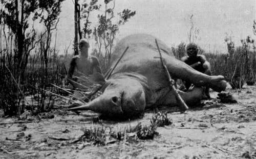
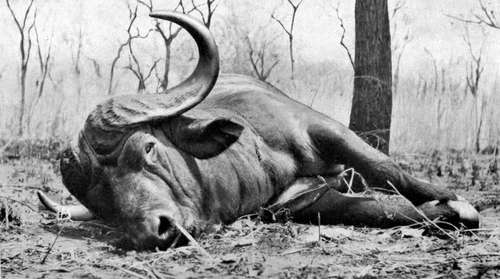

Memories Of Big Game Hunting. Part 6
Description
This section is from the book "Wild Life In Central Africa", by Denis D. Lyell. Also available from Amazon: Wild Life in Central Africa.
Memories Of Big Game Hunting. Part 6
After smoking a pipe of tobacco we took up the spoor again. Machila, a fairly good tracker, was spooring, and I was walking to one side keeping my eyes ahead and to the flanks. Suddenly I saw a grey object just like a big rock, and snapped my fingers to draw the attention of the men. At first I was not sure whether it was not a big boulder, as there were many about there; but as we watched we caught the movement of a rhino's ears.
Rhino ♀ Shot In Northern Rhodesia
It would have been better had I whistled to make the rhino stand up and give me a chance of a good shot, for a sitting animal presents a poor target, if one wishes to get the bullet to a vital spot and kill quickly. However, I thought I could kill him quite well as he was, so sat down, and took a shot with a single .400 cordite Fraser rifle at his shoulder.
After the shot the cartridge jammed in the breech, which is not unusual with single falling-block rifles, and the rhino gave a startled grunt, and was on his legs and off before I could get the refractory case out and loaded again. We all ran after him and saw him disappear into a large patch of light coloured grass that threw off a very strong glare which nearly blinded me. Rushing along in this way I suddenly found myself within a few yards of the rhino, which had come to a stand half broadside on. There was not much time to waste, so I threw up the rifle, and got in a fine shot right on the point of his shoulder, and he dropped in his tracks. As he kept twitching his ears and eyelids, I gave him another bullet from my '303, which settled matters.
He had very nice horns, the anterior one measuring slightly over 2oin. He was a very large bull in good condition, and his feet were big, so I took the front ones as trophies. The natives then cut off his tail, and we tramped back through the heat to the village, where a refreshing bath and good lunch awaited me.
It is very pleasant returning to camp after a successful day, and how different a man feels then compared to a long day's tramp when he has met with bad luck; or, worse still, wounded and lost a fine animal. In one case the exhilaration felt makes the miles slip past as nothing; in the other every step drags, and one's bad spirits are reflected on the faces of the natives.
I shall now change the scene to the Chiromo marsh, which is situated near the Shire river to the south of the Nyasaland Protectorate. On September 28, 1910, I was camped at Muona's village and had spent several days looking for a good buffalo bull. There were plenty of buffaloes about, but up to this time I had not come on a very good bull, and often the tracks were hardly fresh enough to be worth following.
On the morning of that day I determined to get away very early, so got up before sunrise and dressed and breakfasted by candle light. As the darkness of night gave place to a soft grey light we left camp and went to some big maize fields to see whether game had been feeding on the dried stalks. All game is very fond of these stalks and come long distances to feed on them, and fresh spoor can usually be found in these places. In less than an hour we found the night tracks of three buffalo bulls, which, judging by their steaming dung, had just left the spot. We were soon going behind them, and had not got more than 300 yards into the thick bush and grass when a man who had climbed a large anthill said he saw them.
I was soon alongside him, and following his directions I looked ahead and saw the head and horns of a buffalo, which was evidently standing and listening, as he doubtless had heard us in the bush. I had a .404 magazine rifle which had a drag pull, and as I had not used this rifle much I made a mistake in not shooting with my 7.9mm. Mauser which I knew well. I forgot the drag pull of the .404, as my 7.9mm. has an ordinary pull, so I made a bad shot and missed the bone of the neck. However, there was no doubt that I had struck the buffalo somewhere, for he grunted in an angry manner as he ran off with the other two. Then began one of the most exciting days that I have spent in Central Africa.
On reaching the tracks, there was a lot of blood scattered on the leaves and grass. About 8 a.m. we disturbed the buffaloes, which ran off again before I had time to get the rifle to my shoulder. After this we found the wounded bull had taken a line of his own, and on comparing the tracks I was glad to see that his were much larger than those of his companions.
Buffalo Bull Shot In Nyasaland
This was satisfactory in a way, as we now thought that he would not go very far before stopping. Besides it is easier spooring one beast than three, and we knew we were behind the wounded animal.
The sun was terribly hot and the heat reminded me of the Zambesi and Luangwa valleys at the same time of year. Another three hours was spent in following slowly and carefully; for when I came to a particularly thick part of the grass I sent men up trees to look around, as I had no wish to stumble right on the horns of the beast in such cover.
Then, in some fairly open grass country, I saw him standing broadside on, except that his head was turned in our direction. I fired quickly with the .404, and he fell on his back, and I thought I had broken his spine. However, I was mistaken, for he was on his legs again in three seconds, and off he went, with myself and the men running behind, as I wished to keep him in view as long as possible.
The gallant beast heard us following, and, like an old warrior, he turned to meet us, grunting loudly at times. He then began trotting in our direction, so most of my men began to climb trees, and I was amused at the calm way they did this, as none of them hurried. Molilo, a very plucky fellow, stayed behind me with the 7.9,mm., and we stood and watched the buffalo, which seemed very sick. He looked up at the men in the trees, and could not see me well, as I had taken slight cover behind a big bush. Then he stopped and looked round with the sort of air that seemed to say " Come on; I am ready for you." When he stood I could not see his shoulder well, as a few saplings were in the way, so I fired at his hip-joint, and, on getting the bullet he swayed, and I thought he would fall. He did not, but, instead, turned round and walked slowly away. I now took the small rifle and ran alongside him, and he turned at once. The plucky old animal was now too sick to charge, I think, for he only stood glaring at me with his head up. At about twenty yards I fired for his heart, which lies very low in a buffalo's chest, and he fell for good, and began to moan and bellow.
Continue to:
- prev: Memories Of Big Game Hunting. Part 5
- Table of Contents
- next: Memories Of Big Game Hunting. Part 7